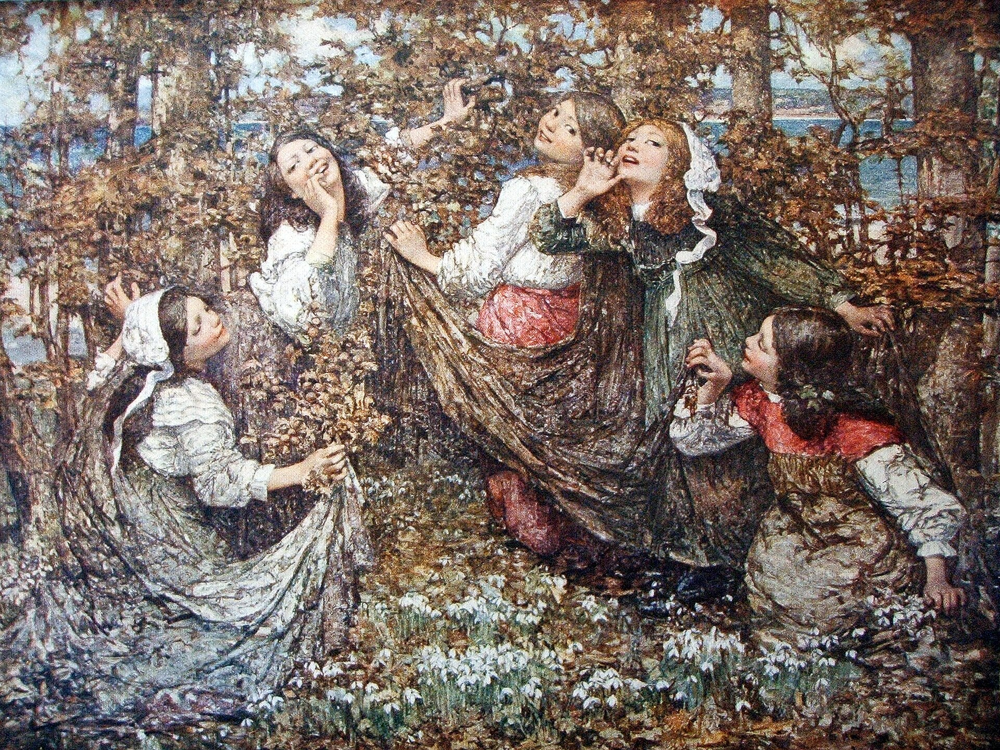

第 16 章
原始主义的凝视
1910年，《伯灵顿杂志》刊登了一篇关于中国雕塑的短文。作者在描述一尊来自北方的砂岩佛头时，用了一个在当时欧洲艺术批评界尚不多见的词——“原始”。他写道，这尊头像的“原始力量”令人想起早期希腊雕塑，其“形式的纯粹性”超越了任何装饰性的干扰。这个词的出现，标志着一个漫长而深刻的阐释过程的开始。
彼时，距离斯坦因从敦煌带走第一批经卷不过三年，距离卢芹斋在巴黎开设他的第一家画廊还有两年。中国佛教造像大规模进入西方视野的通道刚刚打开，而一套全新的观看语言已经在等待它们。这套语言并非为中国艺术量身定制。它的源头在别处。二十世纪最初十年，欧洲先锋艺术家们正经历一场激烈的自我革命。
学院派的透视法则与写实传统被视为窒息创造力的枷锁。毕加索在1907年完成了《亚威农少女》，画中人物的面部直接借用了非洲面具的几何化特征。马蒂斯在摩洛哥的织物纹样中找到了摆脱光影束缚的途径。康定斯基开始谈论“内在必然性”，主张形式本身即可直接唤起精神震颤。而那些在照片中未被捕捉的修复痕迹与残缺细节，恰恰成为这种‘原始’凝视下的盲区。
在这场席卷欧洲的现代主义浪潮中，“原始艺术”成为一个关键概念——它指涉一切非西方、非学院、被认为保持了人类原初表达冲动的视觉制品。非洲木雕、大洋洲船桨装饰、美洲印第安人陶器，这些物品从人类学博物馆的玻璃柜中走出来，进入艺术家的工作室，成为形式实验的催化剂。这是一个高度选择性的挪用过程。
现代主义者并不关心这些物品在原文化中的仪式功能、社会意义或宇宙观。他们从中提取的，是那些可与其自身形式探索共振的要素：简化的体块、夸张的比例、对对称性的打破、对材料质感的直接呈现。换句话说，“原始”不是一个描述性的范畴，而是一个投射性的范畴。它描述的与其说是被观看的对象，不如说是观看者自身的渴望。中国佛教造像正是在这一语境中被“发现”的。
1909年至1915年间，几套重要的图录相继出版。沙畹的《华北考古记》以大量照片展示了云冈、龙门的石窟造像。大村西崖的《中国美术史雕塑篇》虽以日文撰写，其图版却在欧洲汉学界和艺术界广泛流传。

喜龙仁开始系统拍摄中国各地佛教遗迹，他的照片后来结集为五卷本《中国雕塑》，于1925年出版。这些出版物为欧洲艺术界提供了前所未有的视觉资料库。一尊尊佛像从幽暗的石窟中被提取出来，转化为黑白照片，印在铜版纸上，进入巴黎、柏林、伦敦的书店和私人收藏室。摄影媒介的特性在此发挥了微妙的作用。黑白照片剥离了石雕的色彩、质感以及与周围环境的空间关系，将三维的造像压平为二维的轮廓与明暗对比。这种视觉上的抽象化过程，恰恰暗合了现代主义对“形式结构”的追求。
当一尊北魏交脚弥勒像被拍摄成高反差照片，其衣纹的线性流动、面容的几何化处理、体块的简洁力度被空前强化。而原本附着其上的金箔痕迹、香火熏染、信众抚摸留下的光泽变化——所有这些与宗教实践密切相关的物质痕迹——都在银盐颗粒的均匀覆盖下消失了。艺术家们开始收藏这些照片。
巴黎蒙帕纳斯的一间画室里，一位雕塑家的墙上钉着从《华北考古记》中裁下的图版：云冈第二十窟的露天大佛、龙门宾阳中洞的菩萨头像、天龙山第十七窟的供养人浮雕。
它们与来自马赛的非洲面具拓片、来自塔希提的速写并置一处。这种并置本身就是一种论述：无论这些物品来自何方、服务于何种目的，它们在这里被归入同一个范畴——形式创造的资源库。1912年，德国表现主义画家基希纳在给友人的信中提及，他最近看到一些“中国早期石雕”的照片，其“简洁的线条和强烈的表情”令他深受震撼。
同年，法国批评家阿波利奈尔在一篇评论中，将中国佛教造像与罗马式雕塑相提并论，称赞二者共享一种“纪念碑式的庄严”。这些零星的言论在当时并未引起广泛注意，但它们预示了一种正在形成中的审美判断模式：中国佛教造像被从佛教的语境中剥离，放入一个以欧洲艺术史为参照系的比较框架中加以评估。这一剥离过程的关键一步，发生在1913年。
那一年，纽约的军械库展览将欧洲现代主义引入美国公众视野，杜尚的《下楼梯的裸女》引发轩然大波。同年，伦敦的格拉夫顿画廊举办了一场规模不大但意味深长的展览，题为“东方与原始艺术”。展览将中国佛教造像与非洲雕刻、波斯细密画并置，图录前言中写道：“这些作品来自不同的文明，却共享一种超越时间与地域的形式语言。它们证明，人类对美的感知在最深的层面上是统一的。”这段话后来被反复引用，几乎成为二十世纪早期普世主义艺术观的标准表述。
但细读这段话，会发现一个隐含的逻辑跳跃：中国佛教造像被归入“原始艺术”，意味着它被放置在一个进化论序列的底端或早期阶段。在当时的西方艺术史叙事中，艺术的发展被理解为从“原始”到“古典”再到“现代”的线性进程。将中国佛教造像定义为“原始”，等于断言它属于人类艺术发展的童年期，其价值在于提供了一种未经文明过度修饰的“本真”表达。
这当然是一种深刻的误读——北魏或北齐的佛教造像绝非什么“童年期”的产物，它们是高度成熟的宗教义理、精密的造像仪轨与世代传承的匠作传统共同作用的结晶。
但误读本身具有生产性。正是在“原始”这个标签下，中国佛教造像获得了进入现代主义话语的入场券。1914年，大英博物馆的东方版画与绘画展厅进行了一次重新布置。策展人在陈列中国佛教造像的展柜旁，放置了来自非洲贝宁的青铜头像。
说明牌上写道，这两组作品“尽管来源迥异，却展现出对形式简化与表情强度的共同追求”。这是博物馆空间中的一次并置实验。它创造了一种新的观看关系：观众被引导着去注意佛像与非洲青铜像之间的形式相似性，而忽略了二者在功能、意义与制作传统上的根本差异。
佛像不再首先是佛陀，而是一件“雕塑作品”，其价值在于它的形式品质——体量的均衡、线条的流动、面容的内省——这些品质被假定为任何文化背景的观众都能直接感知和理解。这种观看方式的成型，与第一次世界大战期间及战后欧洲的精神氛围密切相关。
战争摧毁了十九世纪对理性、进步与文明的确信。在一片废墟之上，许多知识分子开始转向东方，寻找精神重建的资源。1918年，德国哲学家凯泽林出版了《一个哲学家的旅行日记》，其中对亚洲宗教艺术的精神深度大加赞赏。
同年，诗人克拉邦德编译的中国诗集在德语世界畅销，封面选用的是一尊北齐佛头的照片。1920年，法国作家马尔罗——他后来成为戴高乐政府的文化部长——开始撰写关于亚洲艺术的文章，他将佛教造像描述为“人类灵魂在石头中的显现”，认为它们代表了一种与希腊罗马传统平行但截然不同的“人文主义”。马尔罗的用词值得注意。他说的是“人文主义”，而非“佛教”。这意味着，他把佛像的价值从宗教领域转移到了人类普遍精神表达的领域。
这是一个巧妙的修辞操作：通过将佛像重新定义为“人类灵魂”的显现，马尔罗赋予它一种普世性的艺术价值，同时巧妙地绕开了其具体的佛教内涵——那些复杂的教义、繁琐的仪轨、特定的历史背景，对欧洲读者而言过于陌生，也无助于提升佛像在艺术市场上的地位。市场确实在回应这种新的审美框架。
1910年代末至1920年代，卢芹斋在巴黎和纽约的画廊中，开始按照现代主义的审美标准来选择和陈列中国佛教造像。他敏锐地意识到，欧美收藏家——那些刚从工业财富中崛起的新贵——并不关心佛像的宗教意义或历史出处。他们想要的是“形式的力量”、“线条的纯粹”、“表情的深度”。
这些词汇反复出现在卢芹斋编制的销售图录中。一尊北齐菩萨立像被描述为“形式简化达到极致，衣纹如流水般从肩部倾泻而下，面容沉静如希腊古风时期的阿波罗”。一尊唐代天王像则被形容为“肌肉的张力与动态的爆发力，令人想起米开朗基罗的未完成雕塑”。
这些类比绝非随意为之，它们是精心设计的话语策略，旨在将中国佛教造像纳入欧洲收藏家熟悉的价值坐标中。1924年，卢芹斋在巴黎出版了一本小型图录，题为《中国石雕》。前言由一位法国艺术批评家撰写，文中第一次明确使用了“表现主义”一词来描述中国早期佛教造像。
作者写道：“这些无名工匠并不追求自然的再现，而是直接表达内在的精神力量。在这个意义上，他们是所有表现主义艺术家的先驱。”这个判断在艺术史上站不住脚——北魏的匠师们遵循的是严格的造像仪轨，而非个人化的“内在表达”——但它具有强大的修辞效力。
“表现主义”是当时欧洲艺术界最前沿的词汇之一，将中国佛像纳入这个范畴，等于赋予它一种当代性，使它与基希纳、诺尔德、科柯施卡的作品共享同一个美学平台。这一操作的影响深远。自此以后，西方艺术批评界在讨论中国佛教造像时，逐渐形成了一套固定的词汇表：“纪念碑性”、“精神性”、“形式纯粹”、“内在张力”、“超越时间的静穆”。
这些词汇的共同特征在于，它们都是高度抽象的美学概念，可以适用于任何文化传统的雕塑作品，却无法捕捉中国佛教造像的具体宗教内涵——比如“三十二相”、“八十种好”的造像规范，比如不同手印和坐姿的教义含义，比如佛像开光仪式赋予造像的灵性身份。这套词汇表的形成过程，可以通过一个具体的文本变迁来追踪。
1925年，喜龙仁的《中国雕塑》第一卷出版。在导论中，喜龙仁用了大量篇幅讨论中国佛教造像的“形式品质”。他写道，北魏造像的“线条具有一种音乐性的韵律”，北齐造像的“体量感达到了一种近乎抽象的纯粹”，唐代造像则展现了“对有机形体的完美把握”。这些描述无疑是敏锐的，喜龙仁确实看到了不同时期造像的风格差异。
但整篇导论几乎没有提及佛教教义、造像仪轨或宗教功能。喜龙仁的兴趣焦点始终在“形式”上。他是一位训练有素的艺术史家，他的观看方式深受沃尔夫林形式分析理论的影响。
当他面对一尊佛像时，他看到的是体块、线条、光影、比例——而不是一尊被信众认为具有灵验力量的圣像。喜龙仁的著作影响巨大。在整个二十世纪，它都是西方世界了解中国雕塑的主要窗口。一代又一代的读者通过他的文字和照片认识中国佛教造像，他们继承了他的观看方式——那种将佛像首先视为“形式创造”的方式——却往往没有意识到，这只是一种可能的观看方式，而非唯一的观看方式。
1935年，伦敦中国艺术国际展览会在伯灵顿宫开幕。这是中国文物第一次以如此规模在欧洲集中展出，来自中国、英国、法国、德国、美国、日本等国的三千余件展品汇聚一堂。展览图录的导言由英国艺术史家宾扬撰写，他在描述中国佛教造像时，几乎穷尽了当时批评词汇库中的所有高级词汇：“静穆的庄严”、“内在的精神光辉”、“形式与意义的完美统一”。这些词汇将佛像提升到了与希腊古典雕塑比肩的地位，但它们也完成了一次彻底的语境置换。
在伯灵顿宫的展厅里，佛像被陈列在丝绒衬里的玻璃柜中，上方打着柔和的顶光，周围是其他“杰作”——宋代的瓷器、明代的漆器、唐代的卷轴画。观众穿着正装，低声交谈，在每件展品前驻足片刻，然后移步下一件。
这是一个美术馆的观看空间，其预设的观看行为是审美静观，而非宗教礼拜。同一尊佛像，在原来的石窟中是什么样子？一张拍摄于1920年代的老照片提供了对照。照片中的地点是龙门石窟奉先寺，卢舍那大佛端坐于中央，两侧侍立着弟子、菩萨和天王。
佛像前的香炉中香烟缭绕，几位身着灰袍的僧人正在诵经，周围聚集着数十名信众，有人合掌，有人跪拜，有人仰望。阳光从窟门斜射进来，照亮了佛像的面部，在眼睑下方投下淡淡的阴影。这张照片记录的是一种完全不同的观看关系：佛像不是被“欣赏”的对象，而是被“礼拜”的对象；观众不是“审美主体”，而是“信仰主体”；空间不是“展厅”，而是“道场”。
将这两张照片——一张是石窟中的佛像，一张是博物馆中的佛像——放在一起，便能清晰地看到发生了什么。在从石窟到博物馆的位移中，佛像的物质形态可能变化不大（除了那些被切凿、修补、重新组装的痕迹），但它的身份发生了根本性的转变。
它从一个宗教实践的核心元素，变成了一件艺术欣赏的客体。它的价值不再由它在信仰体系中的位置决定，而是由它在艺术史叙事和艺术市场中的位置决定。这种身份转变并非被动发生。它是被积极建构的，而现代主义的审美话语是这一建构工程的核心工具。
“原始”、“表现”、“纪念碑性”、“精神性”——这些词汇共同构成了一面滤镜。透过这面滤镜，中国佛教造像的某些特征被空前放大（形式的力度、线条的韵律、面容的内省），另一些特征则被系统性地过滤掉（宗教功能、仪轨规范、历史语境）。被放大的是那些可以在现代主义价值体系中获得认可的品质，被过滤的是那些与现代主义无关甚至可能构成干扰的因素。
这并不是一个阴谋论式的“故意遮蔽”过程——许多参与其中的批评家和收藏家确实真诚地相信，他们正在发现中国艺术的“本质”价值——但真诚并不改变遮蔽的事实。这种遮蔽的后果是多重的。
首先，它影响了博物馆的收藏偏好。当“形式纯粹”和“表现力”成为评判标准，那些风格强烈、线条简练、表情夸张的造像——尤其是北魏和北齐的作品——便被推到了价值金字塔的顶端。唐代造像因其“古典”的均衡与写实也受到推崇。
但那些风格不那么“现代”的造像——比如宋代以后趋于程式化的木雕观音、明清时期繁复华丽的铜铸佛像——则在很长一段时间内被视为“衰落”的产物，收藏价值被低估。这种趣味分层至今仍在影响市场行情和博物馆的征集策略。
其次，它塑造了公众的观看期待。当观众走进大都会博物馆或大英博物馆的中国艺术展厅，他们预期看到的是“静穆的庄严”、“形式的纯粹”、“精神的深度”——这些预期本身就是被批评话语预先植入的。他们很少被引导去思考：这尊佛像原本供奉在哪座寺院？
它接受过多少代信众的礼拜？它的手印代表什么教义含义？它的残缺是何时、如何发生的？这些问题在审美静观的框架中被边缘化了，因为它们与“纯粹形式”的欣赏无关，甚至可能干扰那种欣赏。第三，它反过来影响了中国本土的学术话语。
二十世纪上半叶，当中国学者开始向西方介绍本国艺术时，他们常常不得不借用这套西方已经熟悉的词汇。1930年代，一位中国学者在英文刊物上介绍云冈石窟，开篇便写道：“这些早期佛教雕塑展现了令人惊叹的表现主义品质。”他使用的是“表现主义”——一个来自现代主义批评的词——而不是“法相庄严”或“如法造像”——那些来自中国自身传统的表述。
这不是因为他不懂自己的传统，而是因为他知道，只有使用这套词汇，西方读者才能听懂他在说什么。解释权的转移在此刻以一种微妙的方式显现：不是西方人禁止中国人用自己的语言说话，而是西方话语已经设定了对话的框架，中国人要进入这个对话，就必须使用这套框架的语言。当然，并非所有人都对此毫无觉察。
1928年，一位曾在欧洲留学的中国美术史学者在回国后发表了一篇文章，委婉地批评了西方收藏界对中国佛教造像的“形式主义”解读。他写道，佛像首先是“法身”的象征，其每一个细节——从顶髻的隆起到手印的弯曲——都承载着特定的宗教意义，脱离这些意义去讨论“线条之美”，就像脱离文本去讨论书法一样，虽然并非不可能，却错失了最核心的东西。
但这篇文章在当时几乎没有引起任何反响。中国自身的学术体系正处于剧烈的转型期，传统的金石学和画论传统在西方学科分类的冲击下节节后退，尚无能力提出一套足以与西方话语抗衡的阐释体系。1930年代，大都会博物馆新设立的远东艺术部开始系统收藏中国佛教造像。
策展人在给董事会的一份备忘录中写道，收藏的重点应放在“那些具有高度形式创造力和精神强度的作品上，尤其是北魏和北齐时期的雕塑”。备忘录中附了一份参考书目，排在第一位的是喜龙仁的《中国雕塑》。第二位是卢芹斋的图录。
这是一个闭环：批评家定义价值标准，古董商按此标准选货，博物馆按此标准收藏，收藏反过来验证批评家的判断。1940年代，战争中断了大部分国际交流。
但审美框架一旦确立，便具有强大的惯性。战后，当收藏和研究重新启动时，那套词汇表已经不需要再被论证，它变成了常识。1950年代，一位英国批评家在一篇关于中国雕塑的综述中，已经可以毫不迟疑地写道：“中国早期佛教造像属于人类最伟大的表现主义艺术传统。”这句话中，“表现主义”不再是一个需要解释的类比，而是一个不言自明的归类。
从1910年《伯灵顿杂志》上那个犹豫的“原始”，到1950年代这个确定的“表现主义”，不过四十年。这四十年间，中国佛教造像完成了它在西方话语中的身份重塑。它不再是佛陀，不再是礼拜对象，不再是仪轨的承载者。它成为了一件“作品”，其价值由现代主义的美学标准来判定，其意义由西方批评家的词汇来填充，其历史被重写为一部“形式演变史”。这是一次深刻的解释权转移。
文物本身没有说话，但它们被赋予的声音已经彻底改变了。当然，这种改变并非全然负面。正是这套审美框架，使中国佛教造像获得了前所未有的国际声誉。当喜龙仁将一尊北齐佛头与希腊古风雕塑相提并论时，他是在将中国艺术抬升到世界艺术史的顶级殿堂。当马尔罗将佛像描述为“人类灵魂的显现”时，他是在赋予它一种超越文化与宗教的普世价值。这些赞誉是真诚的，它们确实帮助中国佛教艺术突破了西方中心主义的偏见，进入了一个更广阔的视野。
但赞誉本身也是一种权力。谁来赞誉？用什么标准赞誉？赞誉什么、忽略什么？这些问题决定了赞誉的后果。当现代主义的审美框架将佛像从宗教语境中“解放”出来，赋予它“纯粹艺术”的崇高地位时，它也同时剥夺了佛像自身的声音。佛像不再被允许以佛陀的身份说话，它只能以“形式”、“线条”、“精神性”的身份说话。这是一种被高度赞誉的沉默。
黄昏时分，博物馆闭馆。最后一批观众离开展厅，灯光逐一熄灭。一尊来自天龙山第十七窟的北齐菩萨头像静静地陈列在玻璃柜中。
顶灯已经关闭，只有安全指示灯在墙角泛着微弱的绿光。头像的面容在昏暗中渐渐模糊，只剩下轮廓——那流畅的颊线、微垂的眼睑、含蓄上扬的唇角。这些形式特征曾经被一位批评家描述为“超越时间的静穆”。
但在石窟中，这同一张面容曾经被另一种光照亮：香火的暖光、酥油灯摇曳的焰苗、透过窟门洒入的晨光。信众在这张面容前跪拜时，他们看到的不是“静穆”，而是慈悲。他们不是在进行审美静观，而是在祈愿、在忏悔、在寻求慰藉。
那些动作、那些声音、那些气味——诵经的低吟、檀香的清烟、额触地面的微响——构成了这尊头像曾经置身其中的完整世界。如今，那个世界已经消失。留下来的只有形式。形式被完美地保存下来，被精确地描述，被高度地赞誉。
但形式所承载的那个世界，已经无人可以进入。展厅空旷而安静。玻璃柜中的头像面朝正前方，目光低垂。它的视线方向，曾经指向石窟中轴线上的主尊——一尊坐佛，它作为胁侍菩萨侍立在侧。如今，它的视线穿过玻璃，穿过展厅的黑暗，落在对面墙上一幅明代山水画的玻璃框上。这种错位本身，就是一种完整的陈述。